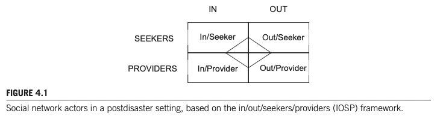
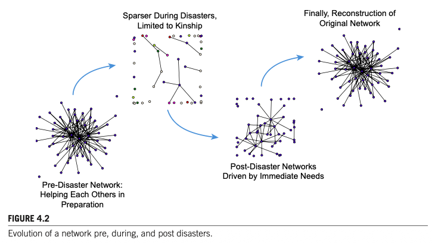

1. 서론: 왜 사회연결망 분석 방법론인가?
재난이 지역사회에 닥치면 기존의 사회적 관계망이 급격히 분산(dissipated)되고 즉흥적인 임시 관계(ad hoc relationships)로 재편됩니다. 재난은 물리적 파괴에 그치지 않고 사람들의 상호작용 방식, 조직의 행동 양식, 사회적 자원 지원 체계 등 전체 사회 인프라를 무질서화(disorganize)합니다.
재난 네트워크는 개인 수준에서부터 지역사회 전체 수준에 이르기까지 다양한 규모(Scale)에서 발현됩니다. 따라서 이들 네트워크의 독특한 구조와 변화를 과학적으로 규명하기 위해서는 기존의 단일 조직 중심 분석을 뛰어넘는 혁신적인 연구 설계(innovative research designs)와 사회연결망 분석(SNA) 도구가 필수적입니다.
본 장은 재난 네트워크 연구를 설계하기 위한 종합적 방법론 프레임워크를 제공합니다. 구체적으로 분석 단위(Units), 분석 수준(Levels), 연계 유형(Ties), 분석 기법(Descriptive & Predictive), 동태적 특성(Dynamics), 그리고 연구자가 직면하는 핵심 도전 과제(Challenges)를 체계적으로 안내합니다.
2. 재난 맥락을 위한 네트워크 패러다임: IOSP 프레임워크
Danielle Varda, Rich Forgette, David Banks, Noshir Contractor(2009)는 다수준 조사 및 분석을 위해 네트워크의 다양한 측면을 식별·측정하는 IOSP (In/Out/Seeker/Provider) 프레임워크를 제안했습니다.
재난 상황에서 행위자는 물리적 공간 위치(재난 지역 내부 vs 외부)와 기능적 역할(자원 탐색자 vs 제공자)의 교차에 따라 4개 범주로 구분되며, 단일 개인이나 집단이 둘 이상의 범주에 중복하여 속할 수도 있습니다.

네트워크 경계 설정(Bounding), 분석 단위 및 수준 확립, 행위자 간 연계(Ties)의 조작적 정의, 연구 질문(RQ) 구조화, 설문 도구(Instrument) 개발 및 데이터 수집을 표준화하는 강력한 이론적 0점 역할을 수행합니다.
2.1 분석 단위: 개인, 집단, 지역사회 (Units of Analysis)
재난 환경의 사회연결망 연구는 다음과 같은 3가지 분석 단위의 상호작용과 맥락적 배태성(Embeddedness)을 면밀히 관찰해야 합니다 (Haines, Hurlbert, & Beggs, 1996).
| 분석 단위 | 연구 초점 및 핵심 내용 | 대표 학자 및 연구 질문 |
|---|---|---|
| 개인 단위 (Individuals) | 소속 집단과 독립된 단일 행위자로서 개인이 사회연결망을 활성화하는 방식 및 수행하는 역할 규명 | Quarantelli & Dynes (1977), Shavit et al. (1994) "비상 시 누가 지원을 탐색하고 제공하는가? 일상과 재난 시 지원 패턴의 차이는?" |
| 집단/조직 단위 (Groups) | 조직체(소방서, 적십자사, 연방기관) 간의 관계 지속성, 공식화 확률, 취약성 저감 파트너십 규명 | Comfort & Haase (2006), Kapucu (2006a) "위기 속 관계가 전후 공식화될 확률은? 어떤 조직 조합이 취약성을 낮추는가?" |
| 지역사회 단위 (Community) | 개인과 집단이 배태된 지역사회 환경 및 공식 조직 정체성 없이 결성된 비공식 자생적 시민 집단 분석 | Stallings & Quarantelli (1985) 3대 자생 집단: 피해평가(Damage assessment), 운영(Operations), 조정(Coordinating) |
2.2 분석 수준: 개인, 전체, 다수준 네트워크 (Levels of Analysis)
1. 자아중심 또는 개인 네트워크 (Egocentric / Personal Networks)
자아(Ego)를 둘러싼 국소적 사회 환경(local social environment)을 측정합니다. 에고는 개별 인간뿐 아니라 특정 단일 조직이나 기관 노드가 될 수도 있습니다.
Q1: 비일상적 상황에서 자원을 배분하는 일상적 네트워크 유형은? (Hurlbert et al., 2000)
Q2: 개인적 위기 시 동원되는 비공식 조력자 네트워크의 규모는? (Chatters et al., 1989)
Q3: 생명 위협 시 사람들은 연결망을 어떻게 사용하는가? (Casagrande et al., 2015)
Q4: 배태된 연계망 내 브로커(Broker)를 활용해 효과적 조정 체계를 어떻게 동원하는가? (Saban, 2014)
2. 사회중심 또는 전체 네트워크 (Sociocentric / Whole Networks)
명확히 경계가 획정된 행위자 집단 내부의 전체 연계를 5단계 층위로 분석합니다:
- 노드 수준 (Nodal): 인입/인출 차수, 교량(Bridge), 문지기(Gatekeeper), 네트워크 접근도 (Kapucu, 2004; Comfort & Haase, 2006).
- 이원 수준 (Dyadic): 두 생존자 간 상호 지원 등 쌍방 관계.
- 삼원 수준 (Triadic): 이행성(Transitivity; $A \to B, B \to C \Rightarrow A \to C$) 및 정보 흐름.
- 하위집단 수준 (Subgroup): 파벌(Cliques), 결속 집단, 분파 구조.
- 전체망 수준 (Global): 전체 네트워크 밀도, 집중도, 직경.
3. 다수준 네트워크 (Multilevel Networks) 및 MTML 모델
Peter Monge와 Noshir Contractor(2003)가 정립한 MTML(Multitheoretical, Multilevel) 모델은 복수의 이론(전염, 사회적 지원, 근접성, 동질선호, 자원교환, 집합행동, 진화 등)을 결합하여 복합 수준에서 가설을 검정합니다.
피해자들이 지리적 인접성 때문에 돕는가(근접성 이론), 아니면 피해 유형이 비슷해서 돕는가(동질선호 이론)? MTML은 $p^*$ 모델(ERGM) 등의 통계 기법으로 상충하는 이론적 동인을 분리 검증합니다. 나아가 비상대응 시에는 신속한 동원(mobilizing)과 군집 활성화(swarming)가 지배하므로, 특정 조건에서 어떤 이론 세트가 우세해지는지 설명하는 상황적 메타이론이 요구됩니다.
3. 연계의 개념화 및 데이터 수집 (Ties & Data Collection)
네트워크 연계는 실재하더라도 연구 목적에 따라 연구자가 조작적으로 정의(operationalized)해야 합니다. Naim Kapucu(2005)와 Carley(2002)는 재난 네트워크 연구에서 포착해야 할 5대 관계 범주를 제시했습니다.
4대 데이터 수집 기법
- 관찰 및 비침해적 전자 흔적: 웹사이트 링크, 소셜 미디어(Facebook, Twitter), 뉴스/블로그 기사 마이닝 (2004 인도양 쓰나미 다국적 구호 연구 등).
- 설문조사 표집: 무작위 표집, 편의 표집, 눈덩이 표집(Snowball Sampling). 피지원자를 지속 추가하여 전체망을 구성하기에 적합하나 일반화에 한계.
- 지휘계통 및 텍스트 마이닝: 조직도 및 표준 상황보고서(Situation Report; SitRep)를 D2K 및 T2K 도구로 마이닝하여 준실시간으로 네트워크 추론.
- 혼합 연구방법론 (Mixed-methods): 설문, FGI, 핵심정보제공자 면담 결합. 특히 농촌(Rural)과 도시(Urban) 간 상이한 서비스 탐색 패턴을 해석하는 데 필수적.
4. 재난 네트워크 분석 방법론: 기술적 분석과 통계적 추론
네트워크 데이터는 노드 간 상호의존성(Relational dependency)을 지니므로 고전 통계학의 '관측의 독립성' 가정을 위배합니다. 따라서 기술적 통계와 네트워크 특화 추론 기법이 병행되어야 합니다.
1. 기술적 분석 (Descriptive Analysis)
| 지표 | 개념 및 재난 현장 적용 | 실증 사례 및 학술적 주의점 |
|---|---|---|
| 대표성 / 다양성 (Representation) |
동질선호(Homophily; 유사한 속성 간 연계) vs 이질성(Heterogeneity). 다문화 지역사회에서 재난 피해자가 동류 집단만 찾는가, 외부에도 도움을 청하는가? | Messias et al. (2012) 문화적 배경에 따른 구호 신뢰도 차이 규명 |
| 호혜성 (Reciprocity) |
전체 다이애드 중 상호 지명(Reciprocal nominations)된 비율. 일방적 자원 요청인가, 상호 부조인가? | Creswick et al. (2009) 응급실 의료진 간 도움 요청 및 지원 수수 분석 |
| 집중도 / 중심성 (Centralization) |
네트워크 차원의 소수 독점도(집중도) 및 개별 노드의 매개(Betweenness; 문지기/병목), 고유벡터(Eigenvector) 중심성 | 🚨 결측치 20% 경고 (Valente et al., 2008) 무작위 결측이 20%를 넘으면 중심성 지표가 심각하게 왜곡됨 |
| 다중성 (Multiplexity) |
한 쌍의 행위자가 복수의 관계 유형(업무+친구+자원)을 동시에 맺고 있는 정도 | Kapucu & Hu (2014) 네트워크 내 사적 친분 수준이 재난 대응 참여도를 유의미하게 예측 |
2. 네트워크 통계적 비교 및 추론 (Predictive Statistics)
- ERGM / p* 모형 (Exponential Random Graph Models): 네트워크 구조를 형성하는 잠재적 종속성과 이질성의 원천을 확률론적으로 모형화. R 소프트웨어의
statnet패키지로 산출 (Frank & Strauss, 1986). - QAP (Quadratic Assignment Procedure) 및 자기상관: 행렬 간 순열 검정을 통해 이원 변수 간 상관 검증. UCINET의 Geary autocorrelation 및 Barriers 2.2의 Monmonier 알고리즘 활용 (Varda, 2011).
- 다수준 모형 (Multilevel Modeling; MLM): 조직 내부에 중첩된 다이애드(Dyads nested within organizations) 데이터를 제한된 최대우도법(REML)으로 추정 (Raudenbush & Bryk, 2002).
5. 재난 네트워크의 동태적 특성 (The Dynamic Nature)
재난 네트워크는 정적이지 않으며 시간의 경과에 따라 급격히 변화합니다. 본 장에서는 동태적 네트워크를 4가지로 개념화합니다:

일반 연구가 정적 네트워크의 완만한 '채워넣기'에 집중한다면, 재난 연구는 외생적 충격으로 인한 **네트워크의 급격한 희소화(Thinning out)**와 이에 적응하여 자원을 확보하려는 **적응적 반응(Adaptive responses)**에 집중합니다.
6. 연구 수행 상 도전 과제 및 7. 결론
해결 대안: 사전에 준비된 조직 명단(Prepared list) 제공.
해결 대안: 복수 문항 대신 단일 문항 척도화 (1~5점 강도 평가 또는 질적 관계 속성 선택).
해결 대안: Danielle Varda(2008)의 PARTNER Tool 활용, 스킵 로직, 표본추출 최적화.
전통적 취약성은 소득, 연령, 주택 상태 등 인구사회학적·물리적 속성에 머물렀습니다. 그러나 SNA 연구는 '사회적으로 고립된 생존자(Socially isolated survivors)'일수록 재난 후 적응과 복구가 현저히 지체된다는 새로운 지표를 제시합니다. 향후 연구는 이를 공간적/지리적 상관성(Spatial correlates) 및 민·관 시너지와 통합해야 합니다.
1. 연구질문 (Research Questions)
Chapter 4에서 제시된 자아중심망, 전체망, 다수준망 연구 질문(Q1~Q10)의 논리를 소방 현장 안전 관리 맥락에 투영하여 5대 핵심 연구 질문을 도출합니다.
2. 확인한 연구결과 (Key Findings from Literature)
선행연구(Chapter 4 및 Chapter 5)에서 규명된 핵심 이론 및 실증적 사실을 연구의 판단 근거로 연계합니다.
| 이론 및 챕터 출처 | 선행연구 핵심 실증 결과 | 본 소방 안전 네트워크 연구로의 연계 시사점 |
|---|---|---|
| IOSP 프레임워크 (Chapter 4; Varda et al., 2009) |
재난 네트워크 행위자를 공간(In/Out)과 역할(Seeker/Provider)로 분리 측정. 상호의존적 자원 탐색과 제공 구조화. | 현장 진입 대원(In/Seeker; 작업중지권), 지휘관/안전점검관(In/Provider; 위험성평가·RIT), 상황실(Out/Seeker), 통제단 유관기관(Out/Provider) 매핑. |
| 5대 관계 범주 (Chapter 4; Kapucu, 2005) |
인적(People), 지식(Knowledge), 자원(Resource), 과업(Task), 조직(Organizational) 관계의 다차원적 분리 측정. | 소방 안전 책무성(RAA 삼원조)의 책임-권한-책무성과 정합하는 4대 매트릭스(의사소통, 조언, 장비차용, 신뢰망) 분리 설계. |
| 동태적 진화 모델 (Chapter 4; Fig 4.2) |
재난 충격 시 네트워크가 극도로 희소화(Thinning-out)되어 친족·핵심 연계로 축소된 후 복구기 점진적 재건. | 출동 시 2인 1조(Buddy) 연계로의 축소 및 Mayday 비상탈출망 가동 $\to$ 귀소 후 아차사고 자발적 등록을 통한 다원적 망 재건 모델 입증. |
| 사회적/네트워크 취약성 (Chapter 4; Valente et al., 2008) |
물리적 취약성보다 네트워크 내 '사회적으로 고립된 노드(Isolates)'의 복구 지체 및 사고 위험이 극심함. 결측치 20% 초과 시 지표 왜곡. | 조직 내에서 안전 조언과 소통이 단절된 '네트워크 고립 소방관(Isolated Firefighter)'의 위험성 선제 스크리닝 및 결측치 15% 이하 통제. |
| 다원주의 & HLM 실증 (Chapter 5; Nowell et al., 2017) |
성과 평가 변량의 **83%~97%가 사건 간이 아닌 개인 간(Within-incident)에 존재** (Table 5.4). 중앙지휘팀(IMT) 나홀로 고평가 편향. | 단일 리커트 평균점수 비교를 지양하고, 다층 위계 조직(계급별) 내부의 소통 격차 및 지휘부 편향을 통계적으로 분리 검증. |
3. 연구절차 (Research Procedure: 6단계 표준 프로세스)
본 연구는 선행연구 지침과 학술적 엄밀성에 따라 다음 6단계 절차로 진행됩니다.
flowchart LR
S1["[STEP 1]
연구 0점 & 경계 설정
(의령 119구조대 전수)"] --> S2["[STEP 2]
설문 도구 설계
(사전 명부 Roster)"]
S2 --> S3["[STEP 3]
전수 데이터 수집
(모바일/서면 병행)"]
S3 --> S4["[STEP 4]
데이터 정제 & 코딩
(1-mode 매트릭스)"]
S4 --> S5["[STEP 5]
넷마이너(NetMiner)
4단계 정밀 분석"]
S5 --> S6["[STEP 6]
결과 해석 & 정책제언
(고립대원 선행 KPI)"]
4. 네트워크 분석단위 및 분석지표 (Units & Network Metrics)
• In-Degree Centrality (인입 연결정도): 동료들로부터 안전 조언/도움을 요청받는 빈도 $\to$ 신뢰받는 안전 리더 지수.
• Out-Degree Centrality (인출 연결정도): 위험 직면 시 타인에게 자원을 요청하는 빈도.
• Betweenness Centrality (매개 중심성): 지휘부와 현장 대원 사이에서 정보를 매개하는 소통 교량(Bridge) 또는 병목(Bottleneck) 식별.
• Eigenvector Centrality (고유벡터): 영향력 있는 핵심 지휘관/선임 대원과의 연결 영향력.
• E-I Index (External-Internal Index): 집단 내부 연계 vs 외부 연계 비율 산출 ($-1$에 가까울수록 계급 간 소통이 단절된 폐쇄적 파벌, $+1$에 가까울수록 개방적 협력망).
• 파벌(Cliques) 및 K-core 분석: 비공식적 안전 소통 결속 하위집단 분리.
• Network Density (네트워크 밀도): 전체 가능한 안전 연계 중 실제 형성된 비율.
• Network Centralization (집중도): 특정 지휘관 1~2인에게 안전 소통이 독점된 정도.
• Reciprocity (호혜성): 안전 소통과 지원의 상호 호혜적 교환 비율.
5. 네트워크 데이터 구조 및 코딩처리 방식 (Data & Coding Method)
넷마이너 분석을 위해 노드 속성 데이터(1-mode Node Attributes)와 4대 관계 매트릭스(Relational Matrices)를 이원화하여 구축합니다.
| 구분 | 데이터 형식 | 변수 구성 및 코딩 기준 |
|---|---|---|
| 노드 속성 데이터 (Node Properties) |
1-mode 엑셀 테이블 (행 = 소방관 $i$) |
• ID: 고유 식별코드 (FF01 ~ FF50) • Rank (계급): 1=지휘관리층(령·경), 2=중간관리층(위·장), 3=일선대원층(교·사) • Team (근무팀): 1팀, 2팀, 3팀 • Role (직무): 1=구조, 2=진압, 3=구급, 4=운전 • Tenure (경력): 소방 근무 연수(연 단위 연속형 변수) |
| 관계 매트릭스 1 (현장 소통망) |
$N \times N$ 정방 행렬 ($M_{\text{comm}}$) |
"현장 출동 시 안전 정보 및 작전 상황을 얼마나 자주 소통하는가?" 1점(전혀안함) ~ 5점(매우자주). 4점 이상을 연계 존재(1)로 이진화(Binarization) 병행. |
| 관계 매트릭스 2 (전술 조언망) |
$N \times N$ 정방 행렬 ($M_{\text{advice}}$) |
"비정형 고위험(산악·수난) 현장에서 위험 판단 및 구조 전술에 대해 누구에게 조언을 구하는가?" 1~5점 가중치 및 대각선(자신 $i=j$) 0 처리. |
| 관계 매트릭스 3 (장비 차용망) |
$N \times N$ 정방 행렬 ($M_{\text{resource}}$) |
"긴급 상황 발생 시 특수 장비, 유압장비, 로프 등을 상호 융통하고 지원받는 관계는 누구인가?" |
| 관계 매트릭스 4 (신뢰/아차사고망) |
$N \times N$ 정방 행렬 ($M_{\text{trust}}$) |
"현장에서 겪은 아차사고(Near-Miss)나 실수를 문책 걱정 없이 솔직하게 털어놓고 의논할 수 있는 동료는 누구인가?" |
1. **대각선 요소 처리**: 자기 자신과의 관계($i = j$)는 모두 `0`으로 처리합니다.
2. **결측치(Missing Data) 관리**: Valente et al.(2008)의 경고에 따라 무작위 결측이 20%를 넘지 않도록, 설문 미응답자가 발생할 경우 교대근무 주기에 맞추어 3차례에 걸친 대면 추적 조사를 실시하여 결측률을 10% 미만으로 강제 통제합니다.
3. **이진화(Dichotomization) 기준**: 5점 척도 데이터는 가중 네트워크(Valued Network)로 1차 분석한 후, 3점(보통) 또는 4점(자주)을 임계값(Cut-off value)으로 설정하여 이진 네트워크(Binary Network)를 병행 산출합니다.
6. 자료수집 및 설문조사 집행 전략 (Data Collection)
- 사전 명부 방식(Prepared Roster Method) 전면 채택: Chapter 4의 권고에 따라, 자유 명명생성법(Name Generator)의 과소보고 및 철자 불일치 오차를 원천 차단하기 위해 의령소방서 119구조대 및 출동대원 전체 명단이 인쇄된 표준 명부를 제공합니다.
- 설문 피로도 최소화 (PARTNER Tool 원리): 문항 수를 최소화하고, 단일 그리드 테이블에서 동료별 1~5점 체크박스를 신속히 선택할 수 있도록 설계합니다.
- 조직적 지지(Buy-in) 및 윤리 확보: 지휘부(서장·과장) 사전 브리핑을 통해 공식 협조를 구하되, 설문 결과는 인사고과나 감찰 문책에 절대 활용되지 않음을 연구윤리 서약서로 보증하여 솔직한 응답을 유도합니다 (목표 회수율: 85% 이상).
7. 넷마이너(NetMiner) 4단계 정밀 분석 프로토콜
수집·코딩된 데이터는 국내외 공공행정 및 재난안전 네트워크 연구의 표준 패키지인 넷마이너 4(NetMiner 4.x)를 통해 다음 4단계 프로토콜로 분석합니다.
넷마이너 Node Report 기능을 통해 **(1) 인입 연결정도 최하위 10%에 해당하는 '고립 대원(Isolates)'을 조기 식별**하여 멘토링 매칭을 실시하고, **(2) 매개 중심성이 높은 중간관리자(구조주임, 안전점검관)를 '현장 안전 코디네이터'로 공식 지정**하며, **(3) 계급 간 E-I Index 개선도를 소방서 선행 안전성과 평가 지표**로 도입합니다.
8. [실전 적용 시뮬레이션] 가상 소방관 5인 데이터로 보는 네트워크 데이터 수집부터 넷마이너 분석까지의 전 과정
"도대체 어떤 데이터를 어떻게 걷어서, 엑셀에 어떻게 넣고, 넷마이너에서 어떻게 분석한다는 것인가?"라는 연구자의 실질적 의문을 해소하기 위해, 의령소방서 119구조대 가상 소방관 5인(김서장, 이팀장, 박주임, 최대원, 정신임)의 실제 분석 시뮬레이션을 단계별로 상세히 제시합니다.
• 일반 설문조사 (R방법론): "당신은 현장 안전수칙을 잘 지킵니까? (1~5점)" $\to$ 개인 한 명 한 명의 점수를 걷어 평균을 냅니다 (소통 혈관을 볼 수 없음).
• 네트워크 분석 (SNA): "당신은 현장에서 위험에 직면했을 때 동료 중 누구에게 무전을 치고 전술 조언을 구합니까?" $\to$ 사람과 사람 사이에 흐르는 '관계(화살표)' 데이터를 수집합니다.
[Step 1] 현장에 배포되는 실제 설문지 양식 (명부형 Roster 방식)
의령소방서 대원들에게 아래와 같이 동료 명단이 이미 인쇄된 단 1장의 '명부형(Roster) 설문지'를 배포합니다.
| 대상 동료 (Alters) | 전혀 안 함 (0점) | 가끔 의논 (1점) | 보통 (2점) | 자주 의논 (3점) | 매우 자주 의논 (4점) |
|---|---|---|---|---|---|
| A. 김서장 (지휘관리층) | [ V ] | ||||
| B. 이팀장 (중간관리층) | [ V ] | ||||
| C. 박주임 (구조주임/베테랑) | [ V ] | ||||
| D. 최대원 (일선 진압대원) | [ V ] | ||||
| E. 정신임 (신규 임용 구조대원) | [ V ] |
[Step 2] 설문 응답의 엑셀 관계 매트릭스(Adjacency Matrix) 변환 화면
수집된 설문지를 엑셀에 가로(보내는 사람, Row)와 세로(받는 사람, Column)로 동일하게 소방관 5명을 배치하여 $5 \times 5$ 정방 행렬로 입력합니다.
| 보내는 사람 $\downarrow$ \ 받는 사람 $\rightarrow$ | A. 김서장 | B. 이팀장 | C. 박주임 | D. 최대원 | E. 정신임 | 해석 요약 |
|---|---|---|---|---|---|---|
| A. 김서장 (지휘관리) | 0 | 4 | 0 | 0 | 0 | 서장은 공식 보고 라인인 이팀장(B)에게만 지시/소통 |
| B. 이팀장 (중간관리) | 4 | 0 | 4 | 3 | 0 | 팀장은 서장(A), 주임(C), 대원(D)과 활발히 연결 |
| C. 박주임 (구조베테랑) | 0 | 4 | 0 | 4 | 4 | 주임은 팀장(B), 대원(D), 신임(E) 모두에게 조언 제공 |
| D. 최대원 (일선대원) | 0 | 2 | 4 | 0 | 1 | 대원은 위험 시 베테랑 박주임(C)에게 전적으로 의존 |
| E. 정신임 (신규임용) | 0 | 0 | 4 | 1 | 0 | 신임은 박주임(C) 외에는 거의 아무와도 소통하지 못함 |
* 자기 자신과의 관계(대각선 $i=j$)는 0으로 코딩합니다.
[Step 3] 넷마이너(NetMiner)가 도출하는 네트워크 토폴로지 지도 (Topology Map)
이 엑셀 표를 넷마이너에 넣으면, 프로그램이 알고리즘(Spring-Embedder)을 통해 아래와 같은 소방관 간의 실제 소통 지도를 화면에 그려냅니다:
flowchart TD
subgraph HQ ["지휘부 (상위 계급)"]
A["A. 김서장
(지휘관리)"] <-->|양방향 지시| B["B. 이팀장
(중간관리)"]
end
subgraph Core ["핵심 소통 교량 (Broker)"]
C["★ C. 박주임 (구조베테랑)
In-Degree 1위 (최고 신뢰)
Betweenness 1위 (소통 병목)"]
end
subgraph Field ["현장 일선 대원 (하위 계급)"]
D["D. 최대원
(일선대원)"]
E["⚠️ E. 정신임
(신규임용 / 고립 위험)"]
end
B <==>|공식 소통 다리| C
C <==>|현장 전술 조언| D
C <==>|유일한 생명선| E
D -.->|약한 연계| E
style C fill:#059669,stroke:#34d399,stroke-width:3px,color:#fff
style E fill:#e11d48,stroke:#fb7185,stroke-width:2px,color:#fff
style A fill:#1e293b,stroke:#38bdf8,stroke-width:2px,color:#fff
style B fill:#1e293b,stroke:#818cf8,stroke-width:2px,color:#fff
style D fill:#1e293b,stroke:#fbbf24,stroke-width:2px,color:#fff
[Step 4] 넷마이너가 계산해 낸 3대 핵심 발견 및 중심성 통계
계급장(서장, 팀장)과 상관없이, 현장 대원 전원이 실제 위기 시 가장 신뢰하고 조언을 구하는 '현장의 실질적 안전 영웅'이 박주임임을 데이터로 입증합니다.
지휘부(A, B)와 일선 대원(D, E)을 연결하는 다리가 오직 박주임 1명뿐입니다. "박주임이 부재하거나 다치면 소방서 소통망이 두 동강 난다"는 치명적 조직 아킬레스건을 찾아냅니다.
박주임(C) 외에는 누구와도 의미 있는 소통을 하지 못하고 있습니다. 현장 순직 사고는 체력 부족이 아니라 '소통망에서 고립되어 위험 경고를 못 들었을 때' 발생함을 사전에 경고합니다.
[Step 5] 전통적 안전평가 vs 네트워크(SNA) 정밀 X-ray 진단 비교
| 평가 관점 | 진단 결과 보고서 내용 | 실제 조직 관리상의 실효성 |
|---|---|---|
| 기존 설문조사 (R방법론: 평균점수) |
"우리 의령소방서는 안전의식 설문 결과 **평균 88점**으로 매우 우수한 안전 관리를 유지하고 있음." | 깜깜이 평가 내부에서 누가 고립되어 있고 소통이 어디서 막혀 있는지 전혀 모른 채 넘어감 $\to$ 잠재적 안전사고 위험 방치. |
| 사회연결망 분석 (SNA & 넷마이너 진단) |
"평균 88점의 착시 이면에, **지휘부-일선대원 간 안전 침묵이 존재**하며, 모든 현장 소통이 '박주임' 1인에게 80% 이상 병목되어 있어 부재 시 지휘 붕괴 위험이 큼. 또한 **신임 대원(E)이 고립**되어 있어 긴급 멘토링 매칭이 필수적임." | 정밀 X-ray 진단 소방 조직의 소통 혈관이 막힌 지점을 정확히 짚어내어, **(1) 박주임을 공식 안전 코디네이터로 지정, (2) 신임 대원 전담 멘토링, (3) 지휘부-대원 간 다이렉트 무전 채널 신설**이라는 즉각적 실무 대책 도출 가능! |